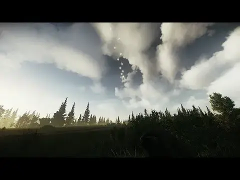

SamSWAT's Fire Support - Arys Reloaded
- Downloads
- 54,813
- Favourites
- 26
- Mod lists
- 45
A BepInEx mod that adds Insurgency-style fire support options into Escape From THE CITY. Currently there is an A-10 autocannon strafe and a Black Hawk helicopter extraction available.
How it works
- Have the ingame rangefinder in your inventory before loading into a raid
- Load into a raid, and equip the rangefinder
- Open the gestures menu (default input: double tap Y key)
- Select a support option in the radial menu
- Point at a location and click LMB to confirm
- For A-10 strafe, you will need to confirm the direction, which can be done by moving the mouse left or right and confirming with LMB
- If you want to cancel the support request before you’ve confirmed it, press ALT + RMB, or equip a different weapon/item
Settings can be changed in the BepInEx configuration manager (F12 key).

Read full article on the Github page for more information:
https://github.com/ArysWasTaken/SamSWAT.FireSupport.ArysReloaded#readme
- HOW TO INSTALL
1. Download the .7z archive and unzip it
2. Drag and drop the two folders BepInEx and SPT into your game directory.
3. That is all
Planned Updates
2024/07/17 - No longer making new features or new bugfixes, simply maintaining the mod due to life commitments.
- (Maybe) Finally giving this mod the Apache fire support we all wanted for Christmas (soon, guys)
- Dedicated keybind to equip rangefinder (will be configurable) It’s already a base feature in EFT: just equip in specials slot and bind it to a number
- Money cost for making a support request (will be configurable in terms of currency and price)
- Cancel support request if you switch weapons/items away from the rangefinder before you’ve confirmed the request
Credits
SamSWAT - creator of the original mod
NWI [Insurgency: Sandstorm] - sounds, models & textures
This mod was made as SamSWAT hasn’t been around and Fire Support hasn’t been updated for some time.
When SamSWAT returns, I will stop maintaining this mod (and take this page down if requested).
Version
2.3.4
- Completely fixed the mod breaking after the first raid (I really made sure this time!!! >:c )
- Halved the number of fragments spawned per bullet from 15 to 8
- Should perform better on lower end PCs and if you’re using HollywoodFX
I’m sorry for the inconvenience!
Will be the last update for some time while I work on other projects
Dependencies
Version
2.3.3
- Fixed the mod breaking after the first raid
- Empty/disabled buttons are no longer highlighted when hovering the mouse over them in the Fire Support call-in UI
- Fixed errors when clicking on empty/disabled buttons in the Fire Support call-in UI
Dependencies
Version
2.3.2
- Fixed Fire Support’s UI breaking (has white boxes) after dying/leaving raid and entering another raid
- Fixed being able to call in a different support when one is already on cooldown
- Fixed server error during generating flea offers when some other mods are installed (like Andern)
- Removed an invalid property in a custom item
Dependencies
Version
2.3.1
- Added the A-10’s weapon and ammo to all blacklists so it shouldn’t be lootable or sold via Fence or Flea
Dependencies
Version
2.3.0
- Updated for SPT 4.0.3+
- Tweaked GAU8 ammo stats
- Code improvements and refactoring
- Migrated custom item loading logic to a server mod
- This will make development for Fika support easier
Dependencies
Version
2.2.4
Updated for SPT 3.9.x
Currently broken, please wait for an update
Version
2.2.3
Updated for SPT-AKI 3.8.0
Apache and other features will be coming in a future update.
When? When it’s ready.
Version
2.2.2
- Improvement: if you have selected a support request but have not confirmed it with LMB, either pressing ALT + RMB, or switching from the rangefinder to another weapon or item will cancel the support request
- Bugfix: Fixed missing Black Hawk helicopter rotors (the old ones went for some cigarettes and never came back )
- Bugfix: Fixed the direction that the A-10 approaches in; it now actually follows the path shown with the marker
- Bugfix: Fixed an audio bug with the A-10 strafe on its first use in every raid, where its engine sound was loud and immediately played after confirming the strafe request
- Bugfix: Resolved a NullObjectReference exception when extracting with the Black Hawk helicopter
- Misc: Some code refactors/improvements
I highly recommend updating to this version as the fixes will improve your immersion and has a nice new improvement
Tested on 3.7.4, should work on 3.7.1+
Version
2.2.2+hotfix
Bugfix: Fixed A-10 audio desync
Tested on 3.7.4, should work for 3.7.1+
Version
2.2.1
Fixes the mod breaking after the first raid you run, hopefully for real this time lol
If you downloaded 2.2.0, please update to this version otherwise you will experience the problem mentioned.
This has been tested on 3.7.4, but should still work on 3.7.1+